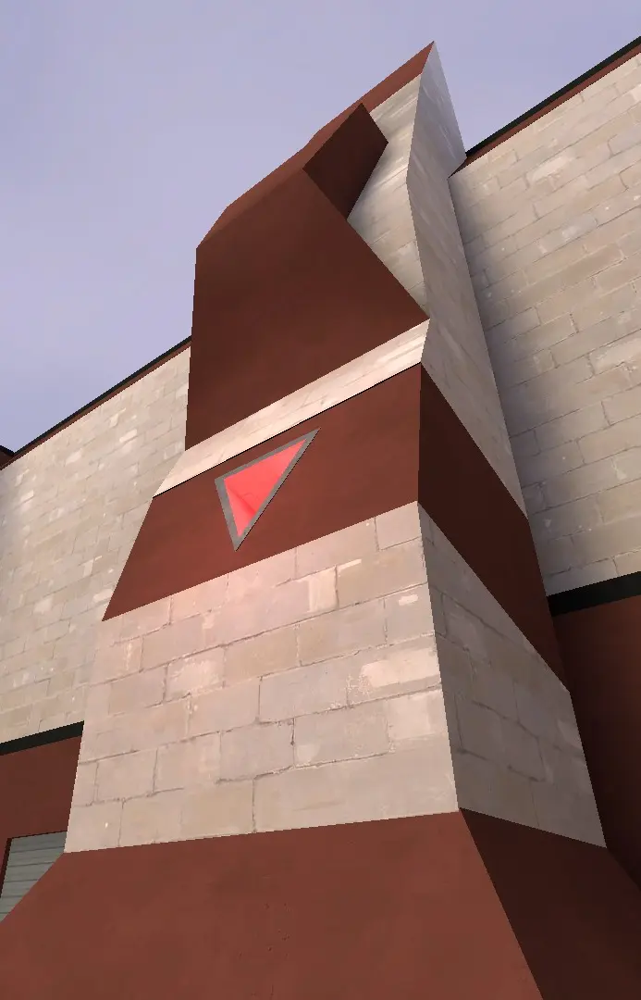
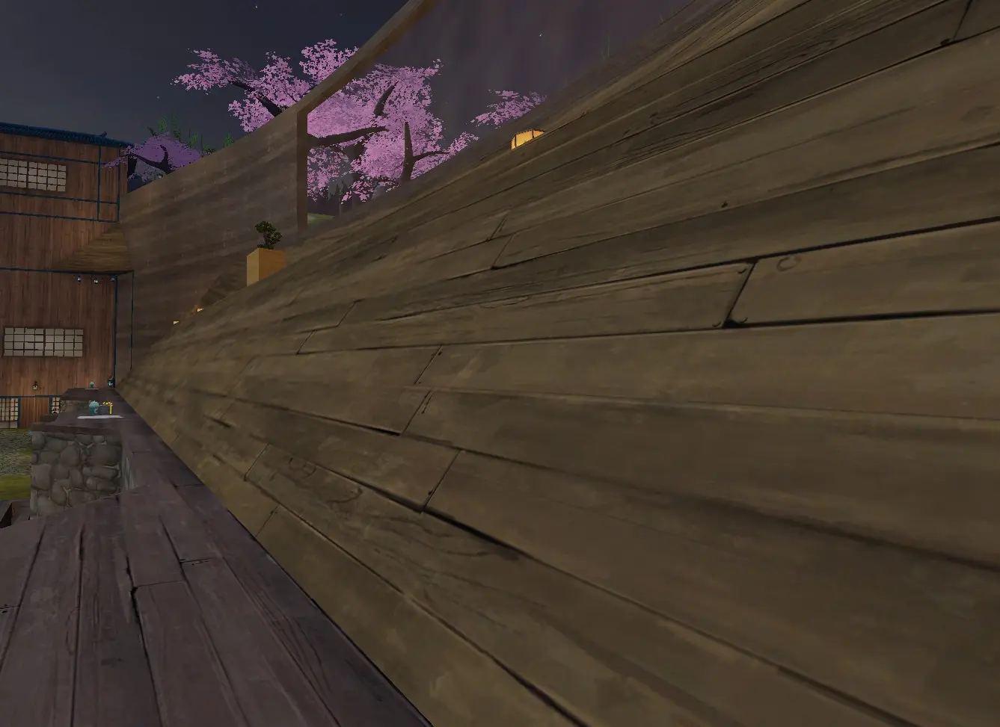

P4SS Time Guide
Last Updated 6/3/26
BASICS
CALL OUTS
Even if maps may differ from eachother the general lay out is consistent. The gold standard for map design currently
is the original, pass_arena2. All maps are symmetrical, so the call outs for
one side are the same for the other.
Note: Whether or not a call out is left/right depends on the perspective of
your goal. For example, if you're facing your own side, the Fence to YOUR left is "right Fence"
Hover over images to see which map it is. Hover over videos to play, and click to fullscreen.
Goal side

Goal
- This is the Goal. If you throw the jack into the enemy Goal you get 1 score, and vice versa.
Goal Ramp
- A common structure on many maps, these are ramps on the side of the Goals that Demo players can trimp on.Gay/Pride
- A very steep ramp above the Goal. Some maps have larger Gays than others, and some allow you to pixel walk along the top. Very useful cherrypicking spot for any class.Left/Right Corner
- Small pockets to the side of each goal which usually has Pults in the corners. Usually the ball is thrown loosely here because it is hard to for the enemy team to get the ball and come back alive from such cramped spaces.Left/Right Ground
- The ground infront of spawn doors to the left and right of goal.Left/Right Fence
- Structures in front of the goal that act as cover and are used for jumping and/or trimping. Gives you highground for spamming on defenders or for spamming offensive players on the ground. Some maps have two fences while some only have one or none.Left & Right side

Left/Right Shelf
- Long elevated portions of the map on each side that span from one team's side to the other. Usually flat, but there are maps replace shelf with surfable ramps.

Upper/Top Left/Right
- Long surfable ramps above shelf. Used in pretty much every rollout.High Left/Right
- The sky above the ramps and/or a second higher ramp. On maps without a second pair of ramps, this is called out after a player jumps/cabers the surf ramp and are in the air and not surfing on the ramp or did a sync jump.
Middle

Upper/Top (mid)
- A large platform in the middle of the map. The jack spawners are usually above and/or below this platform. During set-up, it's important to take space on this platform to contest for ball possession.Lower (mid)
- The ground under the platform. Usually indented and have slopes that demomen and soldiers can ramp slide on. A lower ball spawner is usually right in the middle, so it's important to take space here during set-up to contest for ball possession.
Goblin
- A small crawlspace on each side of mid. Very funny, not very useful.Lower Left/Right (Demothing)
- This is usually connected to shelf and mid. This usually has a shallow ramp and a steep ramp that are used in a move called a "Demothing".Left/Right Dark
- Dark covered areas under shelf that normally have small health packs. Sometimes has a surfable ramp. Really easy to get spammed from shelf, so you might die if the enemy is paying attention.High/Space

Left/Right Ultra
- Tall pillars on each side that have sloped tops that you can pixel walk on. Essential for some bombs and rollouts. Some maps don't have ultras, but the ones that do usually have them in the same spot.Leaf
- Small platforms that surround the dropper spawn. Depending on the map, leaf allows rockets to hit it and splash the ball, which allows the ball to be pushed and pulled.
Left/Right Galactic
- Long beams that span from the side walls to the dropper spawn that you can usually walk on. Elite cherrypicking spot.Space/Skybox
- All the empty space above the map.SET-UP (GETTING EARLY BALL POSSESSION)
When the round starts, everyone should get overhealed/buffed. Ideally the Demo should switch to medic if there are none,
but it's not a big deal if a Soldier switches instead.
When everyone rolls out to mid to contest for the ball, the main goal is to make space so the opposite team doesn't get the ball before
your team does. Avoid dying, because this gives the enemy team a numbers advantage. If you're low on health, try sacrificing your life for
an opponents.
For Soldiers on upper mid, you'll mostly be fighting other soldiers. Try to scare them off upper mid or kill them.
For demos on lower mid, your strategy will vary depending on your loadout.
For Pipes, dealing damage
and/or spamming projectiles at whoever is contesting on lower mid can scare them off usually.
For Stoic,
waiting for them to pick up the ball first and using a melee extender to steal the ball is a very common strategy.
OFFENSE
After you gain ball possession after a defense or set-up, its best to pass to a teammate on your goal side to prepare for an offense.
A standard push starts with either a Soldier or a Demo rolling out on upper left/right, depending
on whichever is free from enemy players.
Your team then rolls out behind them one by one, each taking a turns doing a bomb, which is just a series of jumps to bring them closer to scoring as the ball follows behind.
Rolling out together makes passes messy and leaves your goal defenseless in the case they get the ball and push immediately, so its best to rollout one by one.
Also, dont interfere with whatever bomb of move your ball holder is doing. This increases the chance of your team losing posession and failing the offense. Like if your demo accidentally steals a pencil dribble or a soldier does a bonsteal.
It's important to take advantage of as much space as possible. This means positioning yourself further from your teammates when waiting for a pass like on the opposite shelf or on mid. It's the same reasoning with why you shouldn't roll out together.
Not everyone has to wait though. Even if this isn't a DM reliant gamemode, DM can still be used to your advantage. Having one soldier/demo (and a medic if you have one) shoot at enemy defenders while your team passes the ball increases the amount of things their defenders has to keep track of and forces them to prioritize one of them momentarily.
You force them to either focus you to survive but ignore the goal for a few seconds, or let you deal a ton of free damage to them while they spend their own health rocket jumping to block the goal.
Self Bombs
Self bombs are a series of jumps/trimps and tricks performed one after the other to bring the player and ball towards the enemy goal for a score. Self bombs can also be used to initiate an offense without scoring in mind if you dont have space to lock on to someone rolling out.
Note: Hover video for more info on this specific self bomb
A lot of self bombs start with a lob or a dribble. After that self bombs are usually free-styled, due to how situational they are.
Self bombs can be grouped into categories depending on a characteristic of it like the method of scoring. Water bombs for example, start off with a dribble in water, which is only available on some 4v4 maps. It's defining characteristic is how high or fast the soldier goes after the initial water jump.
Death Bombs aren't a self bomb in the normal sense because you need to be locked on for the ball to stay team colored, but these are very common after a pass from a teammate who has completed their own self bomb but aren't able to score.
For more about self bombs and regular bombs, check out the Bombs and Self Bombs section of the guide.
DEFENSE
This is Moose's Defense Guide, made by Moose (duh). This'll give you the basics of defense philosophy in 4v4 PASS Time.
BOMBS & SELF BOMBS
This section will highlight very common (named) Bombs & Types of Self Bombs
Note: You don't have to call these out before doing them, its just useful to be able to distinguish them
-
Waddle
- The most basic way to score the ball. Just walk towards the goal and throw. -
Demothing
- Throwing the ball on a shallow ramp then trimping to pick up the ball and score.
-
Caberthing
- A demothing where you caber the ground or the ball itself before you pick up it up to gain extra height.
-
Glop Bomb
- Jumping forward and surfing on either of the upper ramps while the ball (locked onto the player) is still homing towards them, then jumping once in front of the goal to score.
-
Shelfie
- Throwing the ball on shelf and pogoing to pick it up at the end and score. -
Pult Bomb (Jman Bomb)
- Throwing the ball on the ground for it to neutral and bounce onto the pult, then jumping mid air to catch and score.
Note: Hover video for more info on this specific Pult bomb (yes there are variants)
-
Water Bomb
- Any self bomb that starts with the soldier jumping in a puddle of water which greatly increases velocity.
Note: Hover video for more info on this specific Water bomb (yes there are variants)
-
Death Bomb
- Any self bomb that ends with the player killbinding while the ball is locked on for it to fall into the goal.
-
Double Extender
- Any self bomb that allows you to perform a double extender on upper left/right from the ground.
Note: Hover video for more info on this specific Self bomb (there are many self bombs that have two extenders (yes the water bomb example is also a double extender))
-
Blu2th thing
- Trimping on the ultra ramps then using your caber to get extra height for you to instadet on the ball in space.
ROLL OUTS
This section will showcase common rollouts for each class and when they are usually seen. Rollouts are not required, but they can be very useful for getting to mid faster and contesting the ball spawns.
Note: The Barnacle/Medic rollout are Asia-specific due to the quickfix and vsh-climb being exclusive to that region
-
Upper left/right
- Useful for rolling out on offense.
-
Lower left/right
- Ramp sliding or trimping on lower left/right on offense. -
Upper Middle
- Most seen at during set up when soldiers contest for ball possession. -
Lower Middle
- Most seen during set up when demos and medics contest for ball possession. -
Left/Right Shelf
- Pogo-ing on shelf to get position faster.
-
Barnacle Rollout
- Using the quickfix on one of your soldiers that are rolling out to roll out with them.